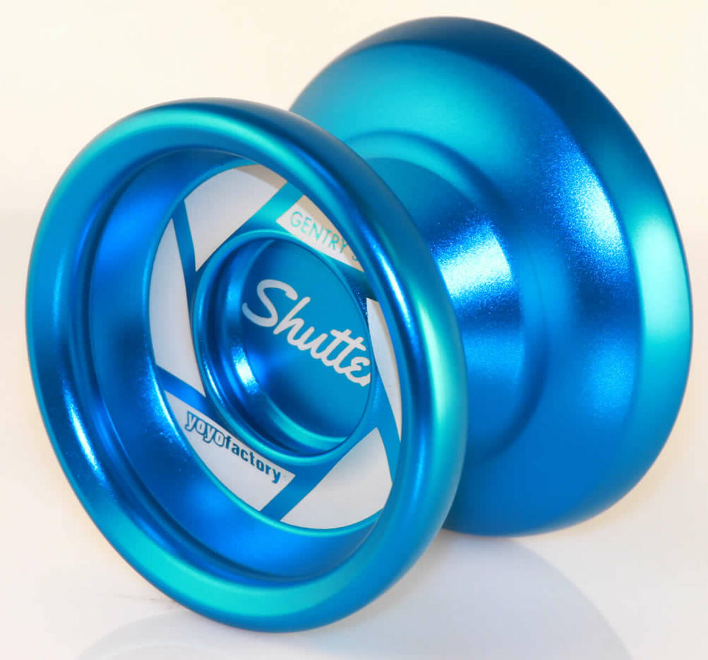

Welcome to YOYOlicious.
This is the main page of YOYOlicious Page 3 is where you're going to find all of the yoyos
The purpose of this page is to make a easy place for you too find a yoyo. To be able to compare and contrast the yoyo from another.
page 2 is about my personal favorite yoyos
